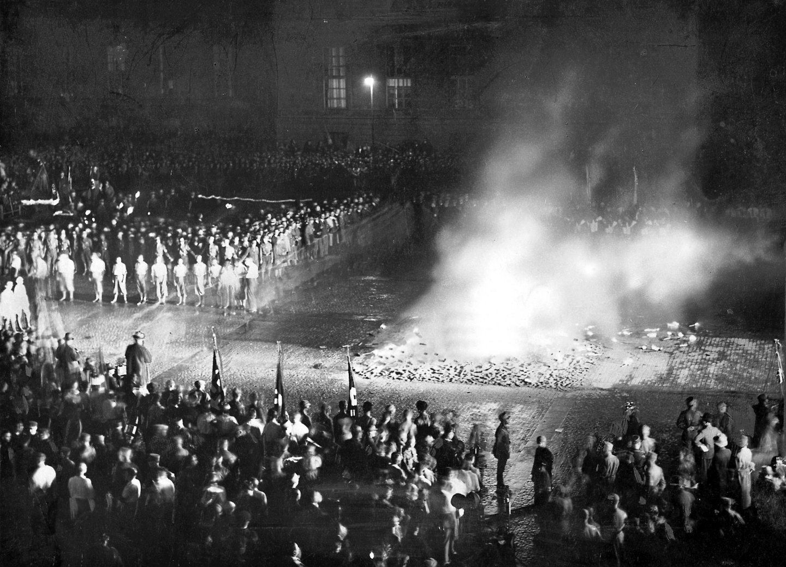
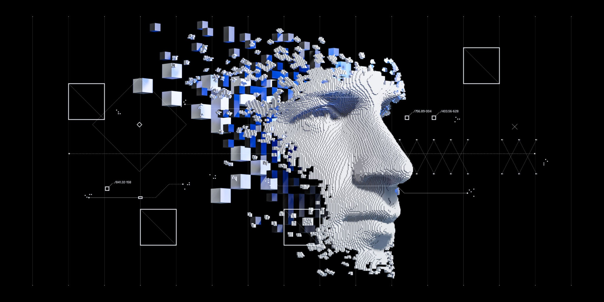
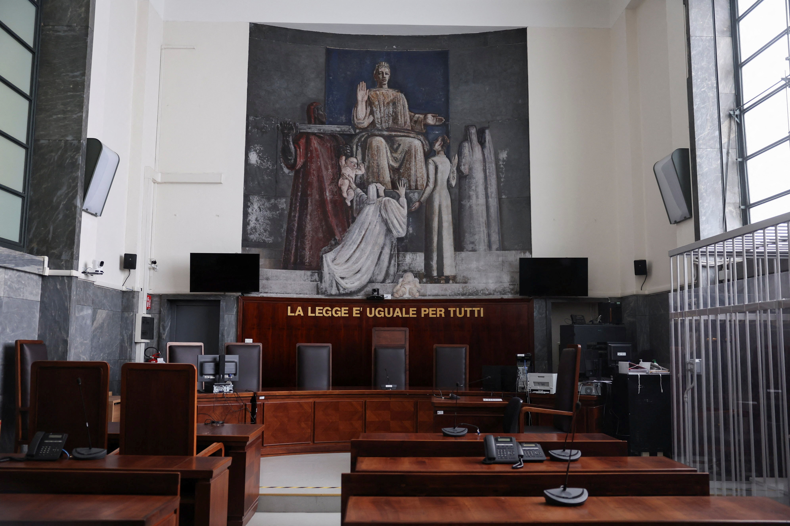

Educazione Civica
Sicurezza digitale: dall'informazione alla responsabilità
Introduzione
Trascorriamo gran parte della nostra vita in ambienti digitali, eppure raramente ci fermiamo a chiederci quanto siamo davvero consapevoli di quello che facciamo. Per il percorso di Educazione Civica del pentamestre abbiamo esplorato il tema della sicurezza digitale da angolazioni diverse — storica, linguistica, organizzativa e tecnica — e il risultato è stato uno dei percorsi più trasversali e coerenti dell'anno. Per chi studia informatica, parlare di cybersecurity, GDPR e propaganda non è un argomento "in più": è parte di quello che saremo chiamati a fare.
Storia — Il controllo dell'informazione ieri e oggi
Il Novecento ha dimostrato che chi controlla l'informazione controlla il consenso. Abbiamo studiato come i regimi totalitari abbiano usato propaganda e censura come strumenti di potere, e come la gestione dei dati si sia poi evoluta dai documenti cartacei ai sistemi cloud. Conoscere questa storia aiuta a capire perché proteggere l'informazione — e la sua libertà — sia ancora una questione politica, oltre che tecnica.

Italiano — Come comunichiamo in rete
In Italiano abbiamo analizzato i registri della comunicazione digitale, letto testi giornalistici sul tema della sicurezza e affrontato la scrittura argomentativa legata alla netiquette. È stato utile riflettere su qualcosa che facciamo tutti i giorni spesso in modo automatico: come scriviamo online, quale lessico usiamo, quanto quello che diciamo rispetta chi legge.
GPOI — Privacy e sicurezza come scelte organizzative
In GPOI abbiamo visto che la sicurezza non è solo un problema tecnico: è un requisito organizzativo che un'azienda deve pianificare, documentare e mantenere. Il GDPR non è un ostacolo burocratico, ma una risposta concreta a rischi reali — data breach, profilazione, perdita di dati sensibili. Capirlo da dentro, con gli strumenti di gestione di progetto che abbiamo studiato, ha dato un senso diverso all'intera materia.

Sistemi e Reti — Gli strumenti tecnici della difesa
In Sistemi e Reti il tema della sicurezza è diventato pratico: triade CIA, firewall, ACL, crittografia, VPN, phishing, malware. Sapere come funziona un attacco — come si costruisce, da dove arriva, cosa cerca — è il presupposto per imparare a difendersi. È stata la parte del percorso in cui ho sentito più chiaramente il collegamento tra quello che studiamo e quello che si fa davvero nel mondo del lavoro.
Conclusione
La sicurezza digitale, alla fine, è una questione di responsabilità. Non basta sapere come funziona un sistema: bisogna sapere come usarlo bene, nel rispetto degli altri e delle regole. Questo percorso mi ha aiutato a collegare la tecnica all'etica, la storia al presente, la teoria alla pratica.
Percorso del Trimestre
- IRC: la pace secondo giustizia, equa distribuzione delle risorse, integrazione europea
- Inglese: Jobs, Poverty, Innovation, Knowledge, Technology and A.I.
- Scienze Motorie: la tecnologia al servizio dello sport
Educazione alla Legalità
Introduzione
Accanto al percorso sulla sicurezza digitale, la classe ha partecipato a un percorso dedicato all'Educazione alla Legalità, coordinato dalla referente Prof.ssa Rita Armati in collaborazione con il Dipartimento di Diritto e con enti esterni — il Comune di Jesi, il Ministero dell'Istruzione e l'Unione delle Camere Penali Italiane (UCPI).
Il processo penale e la Costituzione
Il tema centrale è stato il processo penale: i principi costituzionali che lo regolano, il concetto di "giusto processo", le disposizioni del Codice Penale. Non è stato un percorso teorico: dopo una formazione interna tenuta dal Prof. Giorgio Gabrielloni, siamo stati coinvolti direttamente in un incontro con gli avvocati delle Camere Penali di Ancona, e abbiamo partecipato a un'udienza vera al Tribunale di Ancona.
L'udienza al Tribunale
È stata l'esperienza che mi ha colpito di più nell'intero percorso di Educazione Civica. Entrare in un'aula di tribunale, vedere come funziona concretamente il sistema giustizia — non sui libri ma dal vivo — dà un peso completamente diverso a concetti che si studiano in astratto: la presunzione di innocenza, il diritto alla difesa, il ruolo della Costituzione. Ho capito che la legalità non è un insieme di regole da rispettare per paura, ma una struttura costruita nel tempo per proteggere le persone. E che capirla è già un atto di cittadinanza attiva.
